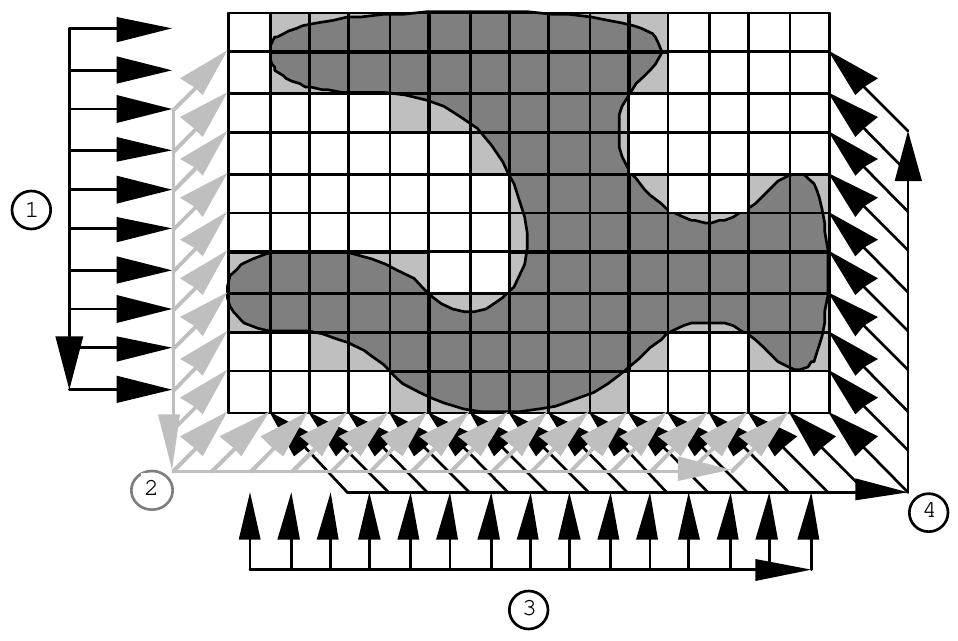

1993 ACM International Collegiate Programming Contest Finals · Problem H
A body scanner works by scanning a succession of horizontal slices through the body; the slices are imaged one at a time. The image slices can be reassembled to form a three dimensional model of the object. Write a program to construct a two dimensional image slice using data captured during the scan.

The scanner consists of four arrays of sensors arranged around a 10×15 matrix. Array 1 consists of 10 sensors pointing to the right, array 2 has 24 sensors pointing diagonally to the top right, array 3 has 15 sensors pointing to the top and array 4 has 24 sensors pointing to the top left. Each sensor records the thickness of that portion of the object directly in front of that sensor.
Readings from the arrays of sensors are recorded in counterclockwise order. Within an array of sensors, data are also recorded counterclockwise. A complete scan consists of 73 readings.
The input file begins with a line with an integer indicating the number of image slices to follow. For each image slice, there are separate lines with 10, 24, 15, and 24 integers representing sensor data from sensor arrays 1 through 4 respectively. The order of the readings is indicated in the diagram. Although it is possible for the result of a scan to be ambiguous, the data supplied to you will have no ambiguous interpretation.
For each slice, your program should print 10 lines of 15 cells. To indicate that the cell represents a part of the object, print a hash character (#) for the cell; to indicate that the cell is not a part of the object, print a period (.). Between successive output image slices, print a blank line.
1 10 10 6 4 6 8 13 15 11 6 0 1 2 2 2 2 4 5 5 6 7 6 5 6 6 5 5 6 6 3 2 2 1 0 2 4 5 5 7 6 7 10 10 10 7 3 3 5 5 0 0 1 3 4 4 4 4 3 4 5 7 8 8 9 9 6 4 4 2 0 0 0 0 0
.##########.... .##########.... ....######..... ......####..... .......####..## .......######## #####..######## ############### ..#########..## ....######.....